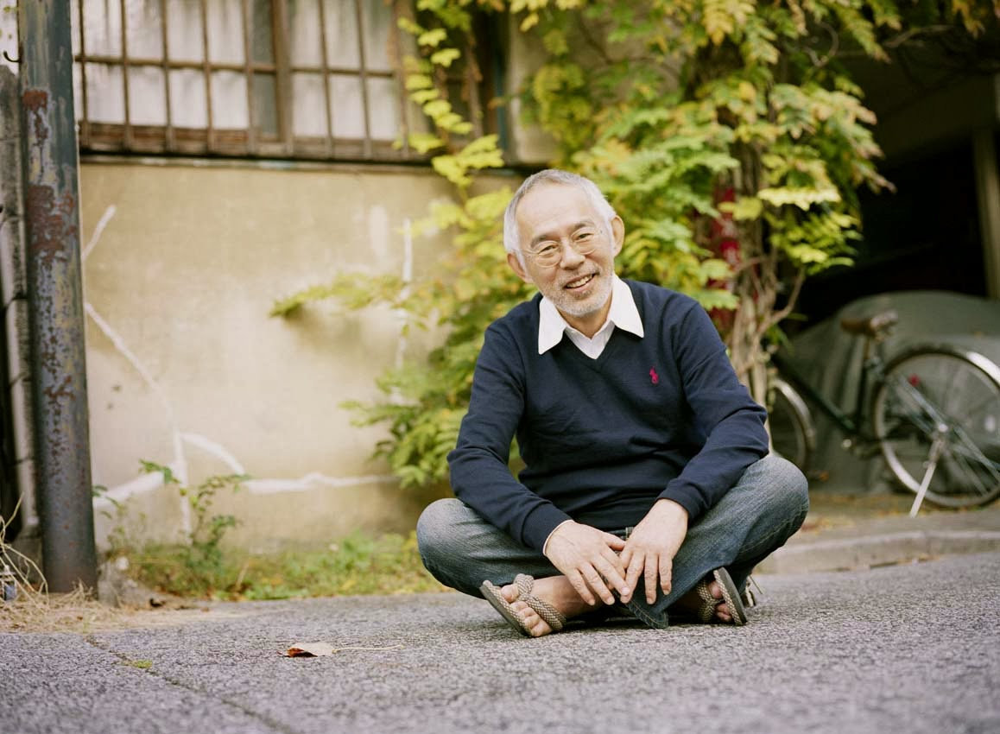
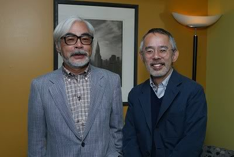

TOSHIO SUZUKI

Nacido el 19 de agosto de 1948 en Nagoya. Es reconocido como uno de los productores más exitosos de Japón tras el enorme éxito de taquilla de las películas de Studio Ghibli. En 1967 se inscribió en la Universidad de Keio y se graduó con un título en literatura en 1972.
Su carrera profesional comenzó en Tokuma Shoten. En 1973 se convirtió en el editor de la revista Comic & Comic. En 1975 fue asignado al departamento editorial de la publicación mensual de Televisión Terrestre. Una de las series en las que trabajó en Wakusei es Robo Danguard Ace. En 1978 se convirtió en un editor de la nueva revista mensual Animage, donde se acercó a Isao Takahata y Hayao Miyazaki. Suzuki y Miyazaki se encontraron otra vez después del lanzamiento de El castillo de Cagliostro.
 Suzuki fue uno de los que facilitaron la creación y publicación del
manga de Miyazaki, Nausicaä del Valle del Viento. Ayudó a establecer el Studio Ghibli
después del lanzamiento de la película. En 1990 Suzuki fue nombrado director de la
empresa Studio Ghibli. En 1997 Studio Ghibli y Tokuma Shoten se fusionaron y Suzuki
se convirtió en el presidente inaugural. En marzo de 2004, Studio Ghibli se independizó
de Tokuma Shoten y Suzuki fue nombrado presidente de la corporación Ghibli. En marzo
de 2014 Suzuki se retiró como un productor y asumió un nuevo cargo de director general
de Studio Ghibli.
Fuente: Wikipedia